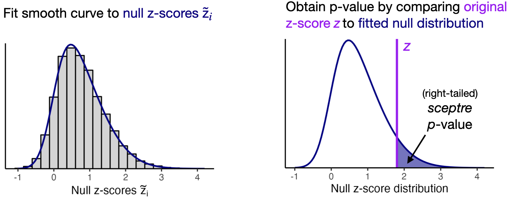

This vignette explicates the “set analysis parameters” step of the
sceptre pipeline. The purpose of this step is to select the
parameters that govern how the statistical analysis is to be carried
out.

We begin by loading the sceptre package.
Throughout, we examine two example datasets. First, we examine the
example high-MOI CRISPRi screen of candidate enhancers in K562 cells.
This is the example dataset that we used in the Get Started
(vignette("sceptre")) and Import Data
(vignette("import-data")) vignettes. We initialize a
sceptre_object called sceptre_object_highmoi
to represent these data.
data(highmoi_example_data)
data(grna_target_data_frame_highmoi)
sceptre_object_highmoi <- import_data(response_matrix = highmoi_example_data$response_matrix,
grna_matrix = highmoi_example_data$grna_matrix,
grna_target_data_frame = grna_target_data_frame_highmoi,
moi = "high",
extra_covariates = highmoi_example_data$extra_covariates,
response_names = highmoi_example_data$gene_names)We additionally examine an example low-MOI CRISPRko screen of gene
transcription start sites in immune cells. We initialize a
sceptre_object called sceptre_object_lowmoi to
store this latter dataset.
sceptre_object_lowmoi <- import_data(response_matrix = lowmoi_example_data$response_matrix,
grna_matrix = lowmoi_example_data$grna_matrix,
extra_covariates = lowmoi_example_data$extra_covariates,
grna_target_data_frame = lowmoi_example_data$grna_target_data_frame,
moi = "low")We print the details of the CRISPRko dataset below.
sceptre_object_lowmoi
#> An object of class sceptre_object.
#>
#> Attributes of the data:
#> • 20729 cells
#> • 299 responses
#> • Low multiplicity-of-infection
#> • 101 targeting gRNAs (distributed across 26 targets)
#> • 9 non-targeting gRNAs
#> • 6 covariates (bio_rep, grna_n_nonzero, grna_n_umis, response_n_nonzero, response_n_umis, response_p_mito)The CRISPR perturbations target gene transcription start sites. Each gene is targeted by three or four gRNAs, and nine gRNAs in the dataset are non-targeting. The “responses” are genes. We print a few rows of the gRNA target data frame corresponding to this dataset below.
lowmoi_example_data$grna_target_data_frame[1:8,]
#> grna_id grna_target
#> 1 ATF2g1 ATF2
#> 2 ATF2g2 ATF2
#> 3 ATF2g3 ATF2
#> 4 ATF2g4 ATF2
#> 5 BRD4g1 BRD4
#> 6 BRD4g2 BRD4
#> 7 BRD4g3 BRD4
#> 8 BRD4g4 BRD4Our goal in analyzing the CRISPRko dataset is to dissect gene regulatory networks by linking perturbations of genes to changes in the expression of other genes.
We set the analysis parameters by calling the function
set_analysis_parameters() on the
sceptre_object. set_analysis_parameters()
takes several arguments: positive_control_pairs,
discovery_pairs, side,
grna_grouping_strategy, control_group,
resampling_mechanism, formula_object,
multiple_testing_method,
multiple_testing_alpha, and
fit_parametric_curve. The only required argument among
these is discovery_pairs. We describe these arguments
below.
Positive control pairs
Positive control pairs are target-response pairs for which we know
(or have strong reason to believe) that there is a regulatory
relationship between the target and the response. We can use positive
control pairs to verify that sceptre (or any association
testing method for that matter) is sensitive (i.e., capable of detecting
true associations) on the dataset under analysis. We use the function
construct_positive_control_pairs() to construct the
positive control pairs. construct_positive_control_pairs()
takes as an argument a sceptre_object and returns a data
frame with columns grna_target and
response_id, where gRNA targets and response IDs with
matching names are paired. We call
construct_positive_control_pairs() on the high-MOI CRISPRi
dataset and the low-MOI CRISPRko dataset. In both cases the positive
control set consists of transcription start sites paired to the gene
regulated by those transcription start sites.
positive_control_pairs_highmoi <- construct_positive_control_pairs(sceptre_object_highmoi)
head(positive_control_pairs_highmoi) # high MOI CRISPRi dataset
#> grna_target response_id
#> 1 ENSG00000069482 ENSG00000069482
#> 2 ENSG00000100316 ENSG00000100316
#> 3 ENSG00000104131 ENSG00000104131
#> 4 ENSG00000122026 ENSG00000122026
#> 5 ENSG00000135821 ENSG00000135821
#> 6 ENSG00000147669 ENSG00000147669
positive_control_pairs_lowmoi <- construct_positive_control_pairs(sceptre_object_lowmoi)
head(positive_control_pairs_lowmoi) # low MOI CRISPRko dataset
#> grna_target response_id
#> 1 CMTM6 CMTM6
#> 2 IFNGR2 IFNGR2
#> 3 JAK2 JAK2
#> 4 NFKBIA NFKBIA
#> 5 STAT1 STAT1
#> 6 STAT2 STAT2Positive control pairs need not consist exclusively of gene
transcription start sites paired to target genes. For example,
enhancer-gene links that have been validated previously (through, e.g.,
arrayed CRISPR screens) also can serve as positive control pairs. Users
manually can append additional positive control pairs to the positive
control pair data frame via a call to rbind(). For example,
suppose we know on the high-MOI CRISPRi data that
candidate_enh_1 regulates gene ENSG00000069482
and that candidate_enh_10 regulates gene
ENSG00000135821. We can add these enhancer-gene links to
the positive control pair data frame as follows.
# construct data frame of additional positive control pairs
additional_positive_control_pairs <-
data.frame(grna_target = c("candidate_enh_1", "candidate_enh_10"),
response_id = c("ENSG00000069482", "ENSG00000135821"))
# append additional pairs to positive control data frame
positive_control_pairs_highmoi_updated <- rbind(positive_control_pairs_highmoi,
additional_positive_control_pairs)
positive_control_pairs_highmoi_updated
#> grna_target response_id
#> 1 ENSG00000069482 ENSG00000069482
#> 2 ENSG00000100316 ENSG00000100316
#> 3 ENSG00000104131 ENSG00000104131
#> 4 ENSG00000122026 ENSG00000122026
#> 5 ENSG00000135821 ENSG00000135821
#> 6 ENSG00000147669 ENSG00000147669
#> 7 ENSG00000155380 ENSG00000155380
#> 8 ENSG00000176890 ENSG00000176890
#> 9 ENSG00000187840 ENSG00000187840
#> 10 ENSG00000196683 ENSG00000196683
#> 11 candidate_enh_1 ENSG00000069482
#> 12 candidate_enh_10 ENSG00000135821We then could supply
positive_control_pairs_highmoi_updated instead of
positive_control_pairs_highmoi to
set_analysis_parameters().
Discovery pairs
Discovery pairs are target-response pairs whose association status we
do not know but seek to learn. Unlike positive control and negative
control pairs, which serve a mainly technical purpose, discovery pairs
are of primary scientific interest. Discovery pairs must be supplied to
set_analysis_parameters(); all other arguments (aside from
sceptre_object) are optional. sceptre provides
two helper functions for constructing discovery pairs:
construct_cis_pairs() and
construct_trans_pairs().
Construct cis pairs
construct_cis_pairs() returns the set of target-response
pairs for which the target and response are located on the same
chromosome and in close physical proximity to one another.
construct_cis_pairs() assumes that the columns
chr, start, and stop are present
within the grna_target_data_frame.
construct_cis_pairs() also assumes that the responses are
genes as opposed to, say, proteins. construct_cis_pairs()
is a useful pair constructor function for screens that aim to map
noncoding regulatory elements (e.g., enhancers, silencers, or noncoding
GWAS variants) to target genes in cis.
construct_cis_pairs() takes several arguments:
sceptre_object (required) distance_threshold
(optional), positive_control_pairs (optional), and
ref_genome (optional). Each target is paired to the set of
genes within distance_threshold bases of that target. (The
default value of distance_threshold is 500,000 bases, or
half a megabase.) The positive_control_pairs data frame
optionally can be passed to construct_cis_pairs(), in which
case the positive control targets (i.e., the entries within the
grna_target column of positive_control_pairs)
are excluded from the cis pairs. Finally,
ref_genome is a string indicating the reference genome that
chr, start, and stop are defined
with respect to. (The only reference genome currently available is
“10X_GRCh38_2020,” which is the GRCh38 reference genome that has shipped
with CellRanger since 2020.)
We use construct_cis_pairs() to construct the discovery
pairs for the high-MOI CRISPRi dataset. We set
distance_threshold to 5e6 (i.e., 5 megabases)
so as to increase the number of pairs in the discovery set for
illustration purposes.
discovery_pairs_highmoi <- construct_cis_pairs(sceptre_object = sceptre_object_highmoi,
positive_control_pairs = positive_control_pairs_highmoi,
distance_threshold = 5e6)discovery_pairs_highmoi is a data frame with columns
grna_target and response_id; each candidate
enhancer is mapped to the set of genes in close proximity to that
candidate enhancer.
discovery_pairs_highmoi[c(1, 10, 20, 30, 40, 50),]
#> grna_target response_id
#> 1 candidate_enh_1 ENSG00000174529
#> 10 candidate_enh_1 ENSG00000117280
#> 20 candidate_enh_2 ENSG00000143493
#> 30 candidate_enh_2 ENSG00000136643
#> 40 candidate_enh_3 ENSG00000142733
#> 50 candidate_enh_3 ENSG00000117748Construct trans pairs
construct_trans_pairs() returns the entire set of
possible target-response pairs. construct_trans_pairs() is
a useful pair constructor function for analyses in which we seek to
conduct a trans analysis, testing each target against each
response. construct_trans_pairs() takes as arguments
sceptre_object (required),
positive_control_pairs (optional),
exclude_positive_control_pairs (optional), and
exclude_positive_control_targets (optional). By default
construct_trans_pairs() returns a data frame with columns
grna_target and response_id, where each gRNA
target is mapped to each response ID. If the
positive_control_pairs data frame is passed and
exclude_positive_control_pairs is set to TRUE,
then the positive control target-response pairs are excluded from the
trans pairs. Next, if positive_control_pairs is
passed and exclude_positive_control_targets is set to
TRUE, then all pairs containing a positive control
gRNA target are excluded from the trans pairs. (In this sense
setting exclude_positive_control_targets to
TRUE is stronger than setting
exclude_positive_control_pairs to TRUE.)
We use construct_trans_pairs() to construct the
discovery set for the low-MOI CRISPRko dataset, excluding the positive
control pairs. The discovery set consists of the set of genes targeted
by one or more gRNAs paired to the set of all other genes.
discovery_pairs_lowmoi <- construct_trans_pairs(sceptre_object = sceptre_object_lowmoi,
positive_control_pairs = positive_control_pairs_lowmoi,
exclude_positive_control_pairs = TRUE)
head(discovery_pairs_lowmoi)
#> grna_target response_id
#> 1 ATF2 PCBP3
#> 2 BRD4 PCBP3
#> 3 CAV1 PCBP3
#> 4 CD274 PCBP3
#> 5 CD86 PCBP3
#> 6 CMTM6 PCBP3We also can use construct_trans_pairs() to construct a
trans discovery set for the high-MOI, enhancer-targeting
CRISPRi dataset. To this end we call
construct_trans_pairs(), setting
exclude_positive_control_targets to TRUE so as
to exclude all positive control gRNA targets from the trans
pairs.
discovery_pairs_highmoi_trans <- construct_trans_pairs(sceptre_object = sceptre_object_highmoi,
positive_control_pairs = positive_control_pairs_highmoi,
exclude_positive_control_targets = TRUE)The resulting data frame, discovery_pairs_highmoi_trans,
maps each candidate enhancer to the entire set of genes.
head(discovery_pairs_highmoi_trans)
#> grna_target response_id
#> 1 candidate_enh_1 ENSG00000069275
#> 2 candidate_enh_10 ENSG00000069275
#> 3 candidate_enh_11 ENSG00000069275
#> 4 candidate_enh_12 ENSG00000069275
#> 5 candidate_enh_13 ENSG00000069275
#> 6 candidate_enh_14 ENSG00000069275Some users may wish to run both cis and trans
analyses on their data. We recommend that such users carry out the
sceptre pipeline twice: once using a cis discovery
set and once using a trans discovery set.
Reducing the multiplicity burden
sceptre computes a p-value for each target-response pair
in the discovery set. These p-values are subjected to a multiple testing
correction procedure (by default, the Benjamini-Hochberg method) to
produce a discovery set that controls some notion of aggregate type-I
error (by default, the false discovery rate). In general it is good to
restrict one’s attention to pairs that are promising or scientifically
interesting. Including a large number of uninteresting or “null” pairs
(i.e., pairs for which there is no relationship between the target and
response) in the discovery set causes the power of the multiple testing
correction procedure to decrease, resulting in fewer discoveries.
Side
sceptre can run left-tailed, right-tailed, and
two-tailed tests of association. Left-tailed tests assess a
decrease in expression, right-tailed tests assess an
increase in expression, and two-tailed tests assess an increase
or decrease in expression. The parameter side
controls the sidedness of the test and can take values
"left", "right", or "both".
("both" indicates a two-tailed test.) Two-tailed tests
typically are the best choice for trans analyses, as the
direction of trans relationships generally is uncertain. For
cis analyses, on the other hand, the sidedness of the test
should be chosen on the basis of the type of genomic element targeted
and the CRISPR perturbation modality. The following table summarizes
whether a left- or right-tailed test is appropriate for a cis
analysis as a function of these variables.
| Target element | CRISPR modality | Testing for | Sidedness |
|---|---|---|---|
| Enhancer | CRISPRi or CRISPRko | Decrease in expression | Left |
| Enhancer | CRISPRa | Increase in expression | Right |
| Silencer | CRISPRi or CRISPRko | Increase in expression | Right |
| Silencer | CRISPRa | Decrease in expression | Left |
gRNA grouping strategy
Multiple gRNAs typically are designed to target a given genomic
element. The parameter grna_grouping_strategy controls if
and how gRNAs that target the same genomic element are combined. The
default gRNA grouping strategy is "union".
"union" constructs a “grouped gRNA” by combining all gRNAs
that target a given genomic element via a union operation; this “grouped
gRNA” is then tested for association against the responses to which the
element is paired. We illustrate this grouping strategy using an
example. Suppose that “gRNA 1” and “gRNA 2” target the same genomic
element. Suppose that “gRNA 1” is present in the cells indexed 3, 6, 9
and that “gRNA 2” is present in the cells indexed 1, 4, 6, 10. The
“grouped gRNA” formed combining “gRNA 1” and “gRNA 2” via the union
operation is defined to be present in the cells indexed 1, 3, 4, 6, 9,
10. (See schematic below.) This “grouped gRNA” is then tested against
responses as if it were a single gRNA.
Schematic of the "union" gRNA grouping strategy. Blue
(resp., white) squares indicate cells in which the gRNA is present
(resp., absent).
The other available gRNA grouping strategy is
"singleton". The "singleton" strategy involves
individually testing each gRNA targeting a given element against the
responses to which that element is paired. "singleton" may
be more appropriate than "union" for experiments in which
gRNA effectiveness is expected to vary considerably across gRNAs.
However, "union" is the default rather than
"singleton" because "union" tends to yield
more powerful results.
Control group
The primary goal of sceptre is to test for association
between a given gRNA target and response. control_group is
a parameter that controls the set of cells used to carry out the test of
association. Suppose for simplicity that we are carrying out a singleton
analysis, i.e. suppose that we are testing for association between an
individual targeting gRNA and a response. We define the “treatment
group” as the set of cells that contain the given targeting gRNA, and we
define the “control group” as the set of cells against which the
treatment group is compared to conduct the association test. There are
two choices for the control group: the “complement set” and the
“non-targeting (NT) cells.” The complement set consists of the cells
that do not contain the given targeting gRNA; the NT cells, by
contrast, consist of the cells that contain a non-targeting gRNA. (See
schematic below.) sceptre tests for association between the
given targeting gRNA and the response by testing for differential
expression of the response across the treatment group and the control
group. Users can select the control group to use by passing either
"complement" or "nt_cells" to
control_group.
![A schematic illustrating the difference between the "complement set" and "NT cells" control groups. The single-cell CRISPR screen experiment produces a pool of cells containing both targeting and non-targeting gRNAs (top). Suppose that we seek to test for association between a given targeting gRNA (e.g., gRNA $T_2$) and a given response. We first divide the cells into two groups: the treatment group (i.e., the cells containing gRNA $T_2$) and the control group. The control group either can consist of the cells not containing gRNA $T_2$ (the "complement set") or the cells containing a non-targeting gRNA (the "NT cells"). `sceptre` tests for differential expression of the given response across the treatment and control groups, yielding a p-value for the test of association between the given targeting gRNA and the given response.](control_vs_complement.png)
A schematic illustrating the difference between the “complement set” and
“NT cells” control groups. The single-cell CRISPR screen experiment
produces a pool of cells containing both targeting and non-targeting
gRNAs (top). Suppose that we seek to test for association between a
given targeting gRNA (e.g., gRNA \(T_2\)) and a given response. We first
divide the cells into two groups: the treatment group (i.e., the cells
containing gRNA \(T_2\)) and the
control group. The control group either can consist of the cells not
containing gRNA \(T_2\) (the
“complement set”) or the cells containing a non-targeting gRNA (the “NT
cells”). sceptre tests for differential expression of the
given response across the treatment and control groups, yielding a
p-value for the test of association between the given targeting gRNA and
the given response.
The choice of the control group should be made on the basis of the MOI of the dataset and the type of genomic element being targeted. In high-MOI screens each cell contains multiple gRNAs. Very few (if any) cells contain exclusively NT gRNAs, and so the complement set is the only choice for the control group. In low-MOI screens there is more flexibility. The default choice for the control group is the NT cells, as we seek to compare the effect of the targeting gRNA to that of a “null” gRNA rather than to the average of the effects of all other gRNAs introduced in the pooled screen. However, the complement set is a reasonable choice for low-MOI enhancer-targeting screens, as gRNAs in enhancer-targeting screens tend to exert small and local effects, rendering the average effect over gRNAs in the complement set similar to that of a “null” gRNA. Thus, we recommend trying both the complement set and the NT cells for the control group in low-MOI enhancer-targeting screens and selecting between these options on the basis of their performance on the negative control and positive control data. The decision tree below summarizes the control group that we recommend selecting as a function of MOI and genomic element targeted.
A decision tree summarizing the control group to select as a function of the MOI of the data and the genomic element targeted. The only option in high-MOI is the complement set. In low-MOI the NT cells are the default option; however, we recommend trying both the complement set and the NT cells for low-MOI enhancer-targeting screens.
Formula
The parameter formula_object specifies how
sceptre is to adjust for the cell-specific covariates.
formula_object is optional; if not provided,
set_analysis_parameters() constructs a default
formula_object. The default formula_object is
formed by summing over all covariates and log-transforming the
count-based covariates. For example, the high-MOI CRISPRi data contain
the cell-specific covariates response_n_nonzero,
response_n_umis, grna_n_nonzero,
grna_n_umis, response_p_mito, and
batch. The first four of these covariates are count-based.
Thus, the default formula object for this dataset is as follows:
formula(~ log(response_n_nonzero) + log(response_n_umis) +
log(grna_n_nonzero) + log(grna_n_umis) + response_p_mito + batch)Similarly, the low-MOI CRISPRko data contain the covariates
response_n_nonzero, response_n_umis,
grna_n_nonzero, grna_n_umis,
response_p_mito, and bio_rep. The default
formula object for the CRISPRko dataset is as follows:
(The covariates grna_n_nonzero and
grna_n_umis by default are not included in the formula
object, as grna_n_nonzero and grna_n_umis
typically do not contain substantial information in low MOI after
quality control.)
Users can specify a custom formula by passing a formula object to the
argument formula_object in
set_analysis_parameters(). User-specified formulas should
be defined in terms of the cell-specific covariates, which can be viewed
by evaluating the sceptre_object in the console.
Resampling mechanism
The parameter resampling_mechanism controls the
inferential procedure that sceptre uses to compute a
p-value for a target-response pair. Suppose for simplicity that we are
carrying out a singleton gRNA analysis. There are three pieces of
information relevant to testing for association between a given gRNA and
response: (1) the vector of UMI counts of the response; (2) the “gRNA
indicator vector,” where a given entry of the vector is set to “1” if
the corresponding cell is part of the treatment group (i.e., it contains
the gRNA) and “0” if it is part of the control group; and (3) the matrix
of cell-specific covariates. First, sceptre regresses the
response vector onto the gRNA indicator vector and covariate matrix via
a negative binomial (NB) GLM. sceptre computes the z-score
\(z_\textrm{obs}\) corresponding to a
test of the null hypothesis that the coefficient corresponding to the
gRNA indicator vector in the fitted GLM is zero. Next,
sceptre resamples the gRNA indicator vector
B times, where B is some large integer (e.g.,
B = 5000). (We discuss exactly how the gRNA indicator vector is
resampled below.) Finally, for each of the resampled gRNA indicator
vectors, sceptre recomputes the z-score, producing
B “null” z-scores \(\tilde{z_1},
\dots, \tilde{z_B}\). The observed z-score \(z_\textrm{obs}\) is compared to the null
z-scores \(\tilde{z_1}, \dots,
\tilde{z_B}\) to compute a p-value.

sceptre provides two procedures for resampling the gRNA
indicator vector: permutations and conditional resampling (also known as
the conditional randomization test). The permutation procedure involves
randomly permuting the gRNA indicator vector B times. The
conditional resampling procedure is slightly more complex. Briefly, the
gRNA indicator vector is regressed onto the covariate matrix via
logistic regression, yielding an estimate for the probability that each
cell contains the gRNA as a function of the covariates. B
synthetic gRNA indicator vectors are then sampled according to these
estimated probabilities. The resampling mechanism can be specified by
passing either permutations or crt (for
conditional resampling) to the argument
resampling_mechanism in
set_analysis_parameters().
Permutations and conditional resampling offer distinct advantages and disadvantages, although the differences can be subtle. The permutation approach is faster and slightly better at handling sparsity, while the conditional resampling approach is slightly better at handling confounding due to cell-specific covariates (see table below). In practice the two approaches often produce similar results; we recommend that users try both, provided that they have the bandwidth and compute to do so. The permutation (resp., conditional resampling) procedure is the default option in low-MOI (resp., high-MOI). (Note that both options are available in both MOI settings.)
| Resampling procedure | Advantages | Disadvantages |
|---|---|---|
| Permutations |
|
|
| Conditional resampling |
|
|
Resampling forms the foundation of statistical inference within the
sceptre framework. In fact, “sceptre” is a loose acronym
for “single cell
perturbation analysis via
resampling.” The resampling machinery of
sceptre is reasonably fast due to several algorithmic
advances, including the technique of resampling score statistics and a
novel sparsity-exploiting algorithm for computing GLM score tests.
Fit parametric curve
As described above, for a given gRNA-response pair,
sceptre computes an “observed” z-score \(z_\textrm{obs}\) and a set of “null”
z-scores \(\tilde{z_1}, \dots,
\tilde{z_B}\) (regardless of whether
resampling_mechanism is set to permutations or
crt). By default, sceptre fits a parametric
density (specifically, a skew-normal density) to the distribution of
null z-scores and then computes a p-value by evaluating the tail
probability of the fitted density at the observed z-score \(z_\textrm{obs}\) (see figure below). The
parametric density functionality can be deactivated by setting
fit_parametric_curve to FALSE in
set_analysis_parameters(), in which case a p-value is
computed by directly comparing the observed z-score to the null
z-scores.

Most users need not to worry about the
fit_parametric_curve argument. sceptre
provides fit_parametric_curve as an option to facilitate
diagnosis of miscalibrated results on the negative control data.
Multiple testing method and multiple testing \(\alpha\)
After sceptre is deployed to analyze the discovery pairs
and negative control pairs, the resulting p-values are subjected to a
multiplicity adjustment. The adjusted p-values are thresholded to call
each pair as “significant” or “not significant.” The parameter
multiple_testing_method controls the multiple testing
method that is used to adjust the p-values. The default option is
Benjamini-Hochberg ("BH"); other available methods can be
viewed via a call to p.adjust.methods.
The parameter multiple_testing_alpha (default value
0.1) controls the level of the multiple testing procedure.
If multiple_testing_method is set to a method that controls
that false discovery rate (e.g., "BH" or
"BY"), then multiple_testing_alpha is the
nominal false discovery rate. If, on the other hand,
multiple_testing_method is set to a method that controls
the family-wise error rate (e.g., "bonferroni" or
"holm"), then multiple_testing_alpha is the
nominal family-wise error rate.
Setting the analysis parameters
We set the analysis parameters by calling
set_analysis_parameters() on the
sceptre_objects, passing discovery_pairs and
positive_control_pairs (and, on the high-MOI CRISPRi data,
side). We allow all other arguments to take default
values.
# high-MOI CRISPRi data
sceptre_object_highmoi <- set_analysis_parameters(sceptre_object = sceptre_object_highmoi,
discovery_pairs = discovery_pairs_highmoi,
positive_control_pairs = positive_control_pairs_highmoi,
side = "left")
# low-MOI CRISPRko data
sceptre_object_lowmoi <- set_analysis_parameters(sceptre_object = sceptre_object_lowmoi,
discovery_pairs = discovery_pairs_lowmoi,
positive_control_pairs = positive_control_pairs_lowmoi)We can call print() on the resulting
sceptre_object, which prints to the console a summary
tracking the status of the analysis. Notice that the “Analysis
parameters” field of the output contains information about the analysis
parameters that we have selected (or that have been set by default).
print(sceptre_object_highmoi)
#> An object of class sceptre_object.
#>
#> Attributes of the data:
#> • 45919 cells
#> • 526 responses
#> • High multiplicity-of-infection
#> • 70 targeting gRNAs (distributed across 35 targets)
#> • 25 non-targeting gRNAs
#> • 6 covariates (batch, grna_n_nonzero, grna_n_umis, response_n_nonzero, response_n_umis, response_p_mito)
#>
#> Analysis status:
#> ✓ import_data()
#> ✓ set_analysis_parameters()
#> ✗ assign_grnas()
#> ✗ run_qc()
#> ✗ run_calibration_check()
#> ✗ run_power_check()
#> ✗ run_discovery_analysis()
#>
#> Analysis parameters:
#> • Discovery pairs: data frame with 610 pairs
#> • Positive control pairs: data frame with 10 pairs
#> • Sidedness of test: left
#> • N nonzero treatment cells threshold: not specified
#> • N nonzero control cells threshold: not specified
#> • Resampling mechanism: conditional resampling
#> • gRNA grouping strategy: union
#> • Formula object: log(response_n_nonzero) + log(response_n_umis) + log(grna_n_nonzero) + log(grna_n_umis) + batch